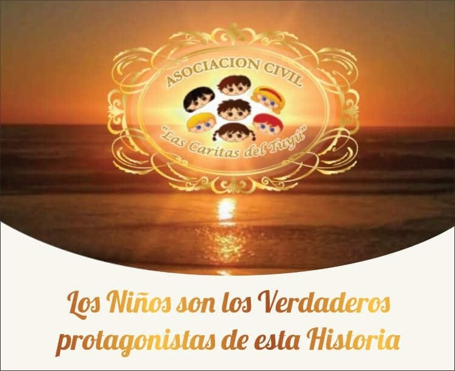
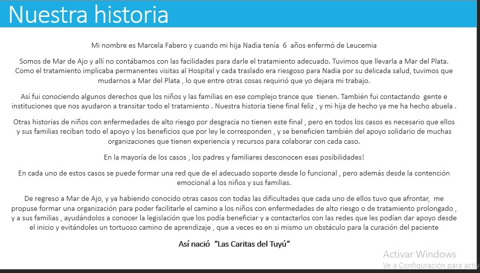
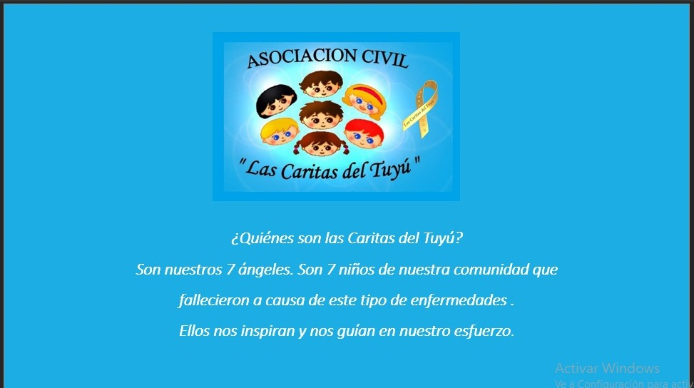
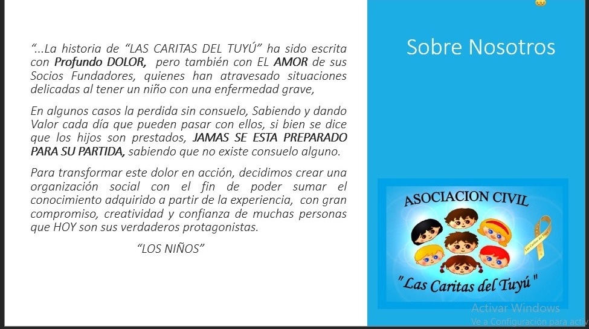
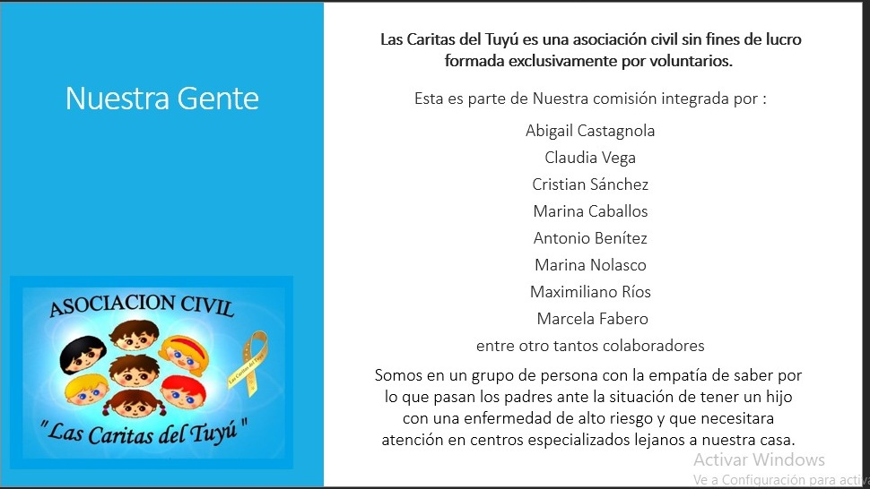
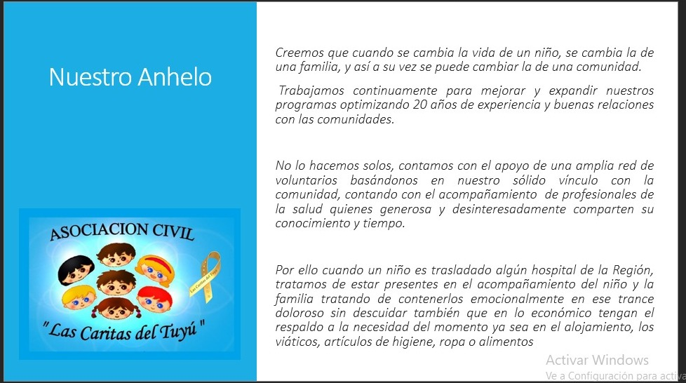
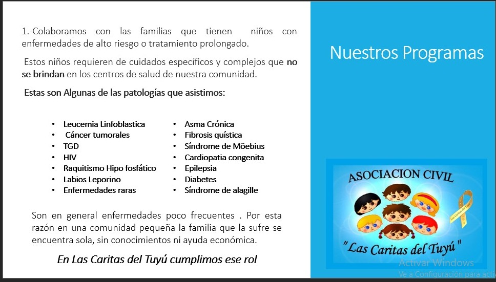
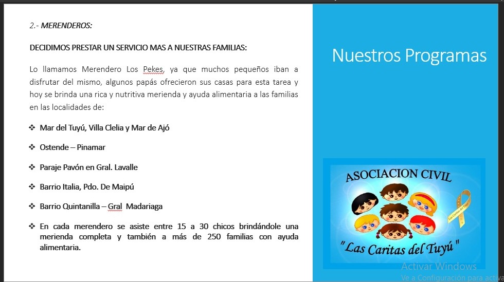
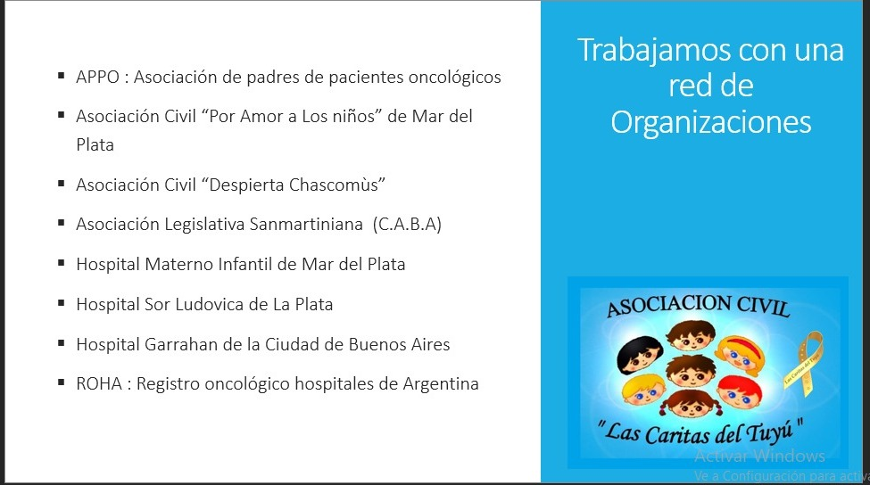

20 años acompañando a familias con niños en tratamiento oncológico y patologías crónicas o congénitas

Gracias a Dios y a ustedes por acompañarnos. Vamos por muchos más.
Somos una asociación civil sin fines de lucro que brinda contención, acompañamiento y esperanza a familias que atraviesan momentos difíciles. Tu ayuda nos permite seguir estando presentes.

Desde hace 20 años, Las Caritas del Tuyú trabaja para acompañar a familias con niños que enfrentan tratamientos oncológicos, patologías congénitas o crónicas.
Nuestra misión es ofrecer apoyo emocional, social y material, creando un espacio de contención donde cada familia se sienta acompañada y nunca sola.
Creemos en la fuerza de la comunidad, en la solidaridad y en el amor como motor de transformación.
Cada sonrisa que logramos es un paso más hacia la esperanza.
Acompañar a niños y sus familias durante tratamientos médicos prolongados.
Brindar apoyo emocional y actividades recreativas que alivien la carga del día a día.
Ofrecer ayuda material y logística en momentos críticos.
Generar espacios de encuentro y contención para que las familias compartan experiencias y se fortalezcan mutuamente.
Tu colaboración hace posible que sigamos acompañando. Podés ayudar de distintas maneras:
Cada aporte suma y se transforma en apoyo directo a las familias.
Sumate a nuestras actividades y sé parte de esta obra.
Compartí nuestra misión y ayudanos a llegar a más corazones.
Descubrí más sobre Las Caritas del Tuyú a través de nuestras diapositivas








Conocé más sobre nuestra obra a través de imágenes y videos que muestran el día a día de nuestras actividades.
Cada donación nos permite seguir acompañando a más familias. ¡Gracias por ser parte!
Para realizar tu donación, contactanos por WhatsApp o email y te indicaremos las opciones disponibles.
Donar ahoraQueremos escucharte. Si tenés dudas, querés colaborar o simplemente conocer más sobre nuestra obra, escribinos.
Calle 89 nº 325 – Mar del Tuyú
Montevideo 1412 – Mar de Ajo
Marcela Fabero